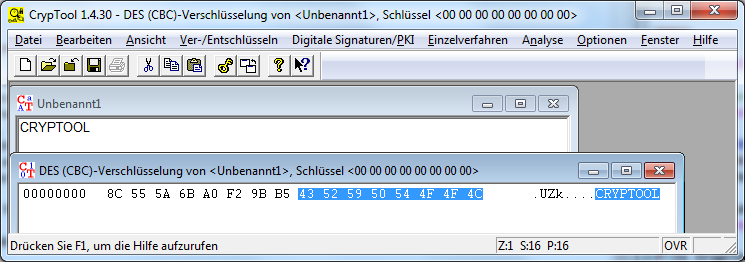

Der CBC-Modus wird mit Null-Initialisierungsvektor und X.923-Padding verwendet.
DES wird von CrypTool im CBC-Modus und im ECB-Modus bereitgestellt.
Die Eingabe des Schlüssels erfolgt im Dialog Schlüsseleingabe.
In CrypTool ist ein Brute-Force-Angriff für das DES-Verschlüsselungsverfahren im CBC-Modus enthalten.
Im Kapitel Szenarien gibt es ein Szenario sowohl für die Ver- und Entschlüsselung mittels des Triple DES-Verschlüsselungsverfahrens im CBC-Modus als auch für den Brute-Force-Angriff. Dieses Szenario kann gleichfalls für das DES-Verschlüsselungserfahrens im CBC-Modus durchgeführt werden, wobei sich natürlich die verschlüsselten Dokumente unterscheiden.
Bemerkung:
Wird mit DES im CBC-Modus verschlüsselt, wird in CT1 standardmäßig das X.923-Padding verwendet. Dieses hängt auch an einen vollständigen Block (passende Länge) immer einen Padding-Block an. Verschlüsselt man auf diese Weise einen Klartext-Block und nutzt den Null-Schlüssel "00 00 00 00 00 00 00 00", erhält man als zweiten Geheimtext-Block wieder den Klartext.
Im ff. Screenshot besteht der erste Block des Klartextes nur aus dem Wort "CRYPTOOL". DES-verschlüsselt ergeben sich zwei Geheimtext-Blöcke und der zweite Block des Geheimtextes enthält wieder den Klartext-Block "CRYPTOOL".

Das Phänomen ist verblüffend, lässt sich aber erklären:
Der Grund ist, dass das X.923-Padding mit Nullen padded und dass es beim DES schwache Schlüssel gibt [für schwache Schlüssel gilt: DES(k, DES(k,m)) = m für alle Klartexte m].
Zunächst lässt sich ein Padding im Allgemeinen nur dann eindeutig wieder entfernen, wenn es die Eingabedaten immer um mindestens ein Bit verlängert. Ansonsten könnte man nicht entscheiden, ob das Padding entfernt werden soll, oder ob dies nicht erforderlich ist, weil die Eingabedaten schon ein Vielfaches der Blocklänge lang waren und die Daten des letzten Blocks einem gepaddeten Block kürzerer Länge gleichen.
Die grundsätzliche Verlängerung beim Padden kann man nur vermeiden, wenn man Out-of-band-Informationen über die Nachrichtenlänge hat oder die Struktur der Nachrichten so ist, dass sie nie mit einem Padding verwechselt werden kann.
Detaillierte Erläuterung:
Gewählte Bezeichnungen:
| B | Letzter Block (beliebiger Inhalt, am Klartextende) |
| A | Block aus lauter Hex-Nullen |
| Mi | i-ter Klartext-Block |
| Ci | i-ter Geheimtext-Block |
| k | DES-Schlüssel (beliebig) |
| j | DES-Schlüssel (schwach, z.B. aus lauter Hex-Nullen) |
Ein Block besteht bei DES aus 64 Bit = 16 Hexzeichen.
Das X.923-Padding hängt an einen vollen Nachrichten-Block B einen Null-Block A = 00 00 00 00 00 00 00 00 an (7 Nullbytes = 14 mal Hex-0, konkateniert mit der Anzahl der Nachrichten-Bytes im Padding-Block = 00).
D.h. das letzte Byte gibt die Anzahl der Nachrichten-Bytes im Padding-Block an. Ein Padding-Block kann also maximal 7 Nachrichten-Bytes enthalten.
PAD(B) = B || A [ falls len(B) = 8 (in Byte) ]
Der Null-Schlüssel j = 00 00 00 00 00 00 00 00 ist einer der 4 schwachen DES-Schlüssel (siehe Wikipedia). Genauer gesagt ist 01 01 01 01 01 01 01 01 einer der 4 schwachen DES-Schlüssel und j entsteht daraus, indem die (ignorierten) Parity-Bits auf Null gesetzt werden.
Ein schwacher Schlüssel j hat die Eigenschaft DES_j(DES_j(m)) = m, d.h. der Vorgang der Ver- und Entschlüsselung ist gleich.
Damit ergibt sich für CBC-DES mit IV = 0:
DES_j(PAD(B))
= DES_j(B || A)
= DES_j(B) || DES_j(DES_j(B) xor A) // weil CBC-Modus mit IV = 0
= DES_j(B) || DES_j(DES_j(B)) // weil A nur aus Nullen besteht
= DES_j(B) || B // weil j ein schwacher DES-Key ist
Das Phänomen tritt bei anderen Padding-Verfahren nicht auf, weil diese keine Null-Blöcke anhängen.